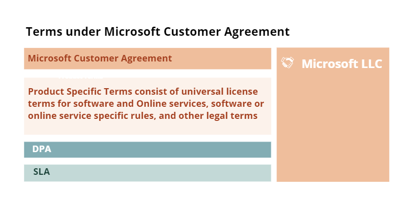

When you contract Microsoft Online-services directly from Microsoft (called MCA Enterprise) or through a reseller (called MCA Indirect) you always need to accept Microsoft terms and conditions.

For some sectors, additional terms and conditions may apply, such as for bank and finance. There may also be eligibility requirements in order to subscribe to certain services for some sectors, such as education or public sector.
In addition to the terms and conditions mentioned above, you either have to enter into an enrollment (order form) if you contract the MCA through Microsoft, or an agreement with your CSP if you contract the MCA through a reseller.
Note that it is also possible to contract Microsoft Online-services through other contract types,
for instance subscribing directly at www.azure.com and accept Microsoft Online Subscription Agreement (MOSA),
or to become an enterprise customer and enter into an Enterprise agreement with Microsoft.
See more about Microsoft’s different programs here.Compared to a traditional sourcing agreement, we highlight the following key findings in the Microsoft Customer Agreement (incl. Product Terms, SLA and DPA) seen from a customer perspective.
Subscription period/termination notice: Normally you can choose between an ongoing subscription where you are billed monthly, or you can commit to a fixed term subscription. If you have not committed to a fixed term, Microsoft may cancel your subscription with 60 days’ notice, irrespective of how long it may take you to establish an alternate solution (for instance to implement a new hosting platform). A fixed term subscription will normally be from 12 months up to 3 years. During a fixed term, Microsoft cannot terminate your subscription for convenience until the subscription term expires. Committing to a fixed term subscription may give you better prices, and it will give you more predictability as to minimum duration. Note that if you buy through a reseller, a fixed term subscription agreed with the reseller will not be binding for Microsoft, unless approved by Microsoft.
Suspension: Microsoft has a wide right to suspend the online services in case of breach. The regulation is fairly balanced, as it links the right to suspension to “material breach”, and that customer fails to cure after a 30 days’ notice period. The exception is that 1) an immediate suspension is required to safeguard customer data or the Online services in general, 2) in case of violation of trade laws, 3) or in case payment is declined. As for 2) and 3) ideally, there should also be a notification, and dialogue process to either avoid suspension or to resolve it.
Suspension of “Acceptable Use Policy». The is a separate suspension regulation under the AUP regulation in Product Terms, where the threshold for suspension is «only to the extent reasonably necessary”. Customer will receive notice in reasonable time before suspension happens, unless Microsoft «believes an immediately suspension is required”. E.g., Microsoft may suspend all Online services and not only the affected service, can lock out all users and not only the user breaching the policy, and customer is not guaranteed a notification in advance/a right to cure before suspension happens.
Infringement: In case Customer receives a third-party claim alleging that the use of the Online services infringe such third party IPR, Microsoft may choose between modifying or replacing the services or terminate the service with immediate effect. There is no obligation for Microsoft to for instance use «all reasonable efforts» to resolve or replace the affected service, before Microsoft may choose to terminate and refund any prepaid fees. The termination right is absolute and do not consider the consequences for the customer, e.g., is it possible to establish an alternative service fast for the customer?
Immediate termination right: In case of material breach, which is not cured within 30 days after notice, either party may terminate with immediate effect. E.g., if Microsoft terminate the customer cannot expect or require the service for a «transitional» period, until the customer has successfully established alternative services. For business-critical solutions, this poses a risk from a customer perspective.
Change to or removal of online services: Microsoft may according to the product terms remove or replace online services at any time, however removal or replacement of material features or functionality normally presuppose 12 months’ notice except that an expedited removal is allowed if required due to security, legal or system performance considerations. In the latter this may from time to time make it difficult to plan for the changes for the customer, and in a worst-case scenario it may affect customers operations. There is no obligation for Microsoft to use commercially reasonable efforts to change the service, rather than removing services in mentioned situations. This should be assessed further for business critical solutions.
SLAs are normally given (and compensated) for the individual service, not necessarily the combined “solution” you buy to support your business needs. This means that if you buy several services which has similar uptime, for instance 99,9, this will not be the actual availability offered by Microsoft as the actual uptime will be the multiplication of each of the individual online service uptime percentages, which normally will be lower.
Fees: Depending on whether you contract the MCA directly with Microsoft (MSA Enterprise) or through a reseller (CSP Indirect), you either need to agree the service fees directly with Microsoft (through an order form) or with your reseller (CSP) (through a resale/purchase or similar agreement such as SSA-D, SSA-V, SSA-L, SSA-Sky).
Fees, invoicing: It’s important to understand that the use of the Online services can be scaled up as you need, and that no use limits are set. You pay for the consumption you have made, as this is measured by Microsoft. It’s your own risk if the consumption increases above what you expect, however you may set limits to avoid such situations. Note that if you buy through a reseller (CSP), your resale/purchase agreement with the reseller will probably introduce a 25-day deadline to object to any invoices (as this is the corresponding deadline that applies for the CSP through its agreement with Microsoft (Microsoft Partner Agreement). After the deadline has expired, you will have to pay whatever the Microsoft meter shows (even if you believe the consumption is wrong or if you believe that the consumption is higher than necessary due to errors in the Online services). Any objections set forth within the deadline will be processed by Microsoft, but until Microsoft has processed your complaint, you need to pay the amount due without any right to withhold/offset. If you contract the MSA directly with Microsoft, you should check the enrolment whether similar regulations apply.
Limited warranty: Microsoft disclaims all liability for loss due to errors/downtime, which is fairly normal in the “average” cloud agreement. Customers only sanction is «Service Credits» (a percentage of the monthly amounts paid, given as a credit), provided Microsoft accept the customer claim for credits. E.g. customer has limited rights to withhold payment or claim damages due to errors/downtime, terminate for cause etc.
Liability general: Both parties’ liability is limited to an amount equaling the amounts paid during the 12 months prior to the incident.
Customer liability, carve outs from the normal liability cap: If customer breaches confidentiality (for instance shares the details of its agreement with Microsoft with a third party which is not publicly known), violates Microsoft IPR or Microsoft faces a third party claim due to customer data (including customer owned or licensed applications) or breach of such third party IPR, no limitations of liability apply. This means that there is no liability cap for the most typical customer breach situations.
Customer liability for affiliates or third parties: As a customer you are allowed to let your affiliates use the Online-services, external users (temps, consultants, suppliers etc), and you may also build offerings (such as SaaS) to your own customers and use Online-services as part of your offering. For all situations, you are liable for such party’s compliance with the Microsoft terms and conditions, and for compensating Microsoft for any loss in this respect. E.g you should inform your affiliates and external users/customers of important obligations in the terms and conditions (most importantly the acceptable use policy, license restrictions and export control rules), and you should consider asking them for an indemnification if they do not comply with the regulations.
Separate terms: Separate terms may apply for third party services made available as part of the Online services. Always verify if such exist or not, and review if applicable.
Updated terms and conditions: The Microsoft Customer Agreement will not change during a subscription, before you accept the changes, however you may be required to do so for Microsoft to accept new orders/renewal of the subscription term. The terms and conditions links to additional terms, such as Product Terms, SLA and DPA. These terms are often updated, often once a month, and may change to the worse from a customer perspective, but material adverse changes for a particular version will not apply during the applicable license, subscription, or billing period.
Order of precedence: (1) DPA; (2) MCA; (3) Product Terms; (4) SLA; and (5) any additional terms presented when an order is placed.
Jurisdiction: The terms and conditions are subject to Irish law, even though you reside in another jurisdiction. If you contract directly will Microsoft, you will also enter into an agreement with the local Microsoft entity for billing etc, where the venue will be local Microsoft entities country as venue. This may make it difficult to initiate a legal process against Microsoft, where aspect related to the cloud services will be subject to Irish law, while claims related to payment/license metrics will be subject to local law. If you buy through a CSP, you will probably have your jurisdiction as venue in such contract as well.
Microsoft’s DPA is from an overall “customer perspective” acceptable, and in line with what you should expect from a cloud supplier. It’s fairly balanced seen from a customer perspective. However, see below with regards to the regulation related to transfer of personal data.
After an update in November 2020, Microsoft undertake to indemnify data subjects for any material/non-material damage. This is actually just the same as what follows from GDPR. However, if you are sued yourself by a data subject, and are held to be jointly liable for damages also caused by Microsoft, your ability to claim restitution for damages from Microsoft, is limited by the general limitation of liability (a sum equaling 12 months service fees).
Be especially aware of the regulations related to transfer of personal data outside EEA. Microsoft confirms in its DPA that EEA Standard Contractual Clauses (SCC) v.2021 is used to facilitate the transfer. Furthermore, the DPA includes an Appendix C specifying some additional safeguards and an attachment 1 including specific GDPR terms. However, none of these documents implements additional measures as required according to the Schrems II-decision. The customer, as the controller, has to carry out a risk assessment in accordance with art. 32 of the GDPR to verify the extent to which a third party (including the authorities) may get access to the personal data in transit, as well as in rest and when the personal data is processed, see more comments to the DPA below.
As the other terms and conditions under the MCA, the DPA may be updated frequently. Look therefore for updates, in good time before your subscription renews, so you can carry out an updated risk assessment if/when the terms and conditions are changed.
Note that your customer data is deleted 90 days after expiry/termination.
As you see, there are many regulations which differ in balance from a traditional sourcing agreement, and the customer protection is weaker. The agreement balance is more in line with a traditional license agreement. The product is standardised (which it must be), you get what you get, and there are limited possibilities to claim damages etc.
Even though there are many “unfavourable” terms and conditions from a customer perspective, we do not see many examples that this affects the customers in daily life. An “average company”, will not face any problems as long as you pay in time. But if Microsoft does not like your attitude when using their services, it’s easy for Microsoft to kick you out. Since the service are standardised, it’s to expect that the terms and conditions also are standardised and consider that Microsoft customers are a diverse, spread over many different jurisdictions.
Our clear recommendation is that the balance in the terms and conditions, should not stop you from going to the cloud. But, since the risk and responsibilities are as is, you should make a careful and thorough assessment of the impacts it may have and how you may mitigate the risks before taking the decision. For several business sectors there are specific rules and regulations that needs to be fulfilled, and then you need to map the terms and conditions with such rules. The financial sector is an example here. Our recommendation is that all customers do a similar exercise when contracting Online Services that will have a critical or important impact on your business if they fail.
Note that there is limited possibility to negotiate “better” terms with Microsoft. You should not focus your time on trying that, but rather do a proper risk assessment. Our experience is that it is close to impossible to negotiate with Microsoft unless you are subject to general or sector specific rules and regulations where the Microsoft terms and conditions will not make you compliant, or unless you do a large commitment for use of Online-services. If you desire to negotiate, it is also important to subscribe to the online services under the Enterprise program, as this is the only program that offers the possibility to negotiate with Microsoft.